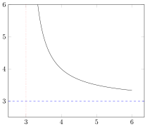
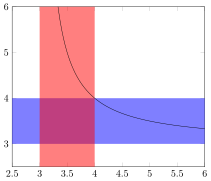

Convenience constructs
Horizontal and vertical lines
x = range(3.01; stop = 6, length = 100)
y = @. 1/(x-3) + 3
@pgf Axis(
{
ymin = 2.5,
ymax = 6,
xmin = 2.5
},
Plot(
{
no_marks
},
Table(x, y)
),
HLine({ dashed, blue }, 3),
VLine({ dotted, red }, 3)
)
Horizontal and vertical bands
x = range(3.01; stop = 6, length = 100)
y = @. 1/(x-3) + 3
@pgf Axis(
{
ymin = 2.5,
ymax = 6,
xmin = 2.5,
xmax = 6
},
HBand({ draw="none", fill="blue", opacity = 0.5 }, 3, 4),
VBand({ draw="none", fill="red", opacity = 0.5}, 3, 4),
Plot(
{
no_marks
},
Table(x, y)
)
)